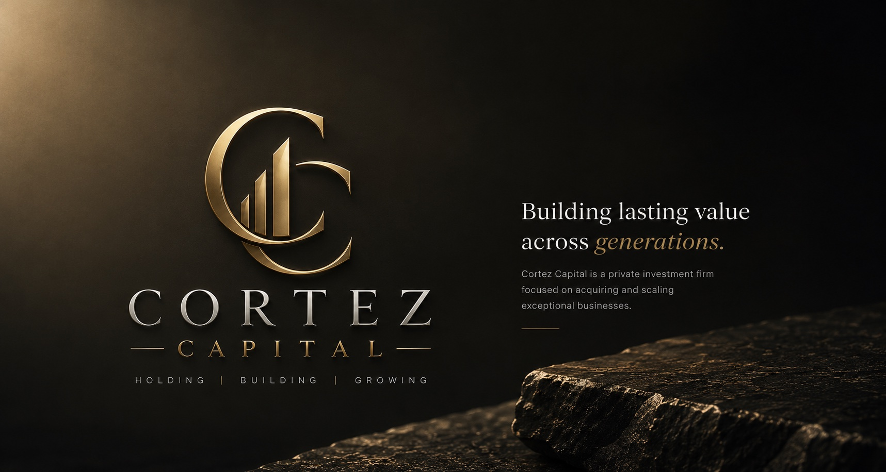
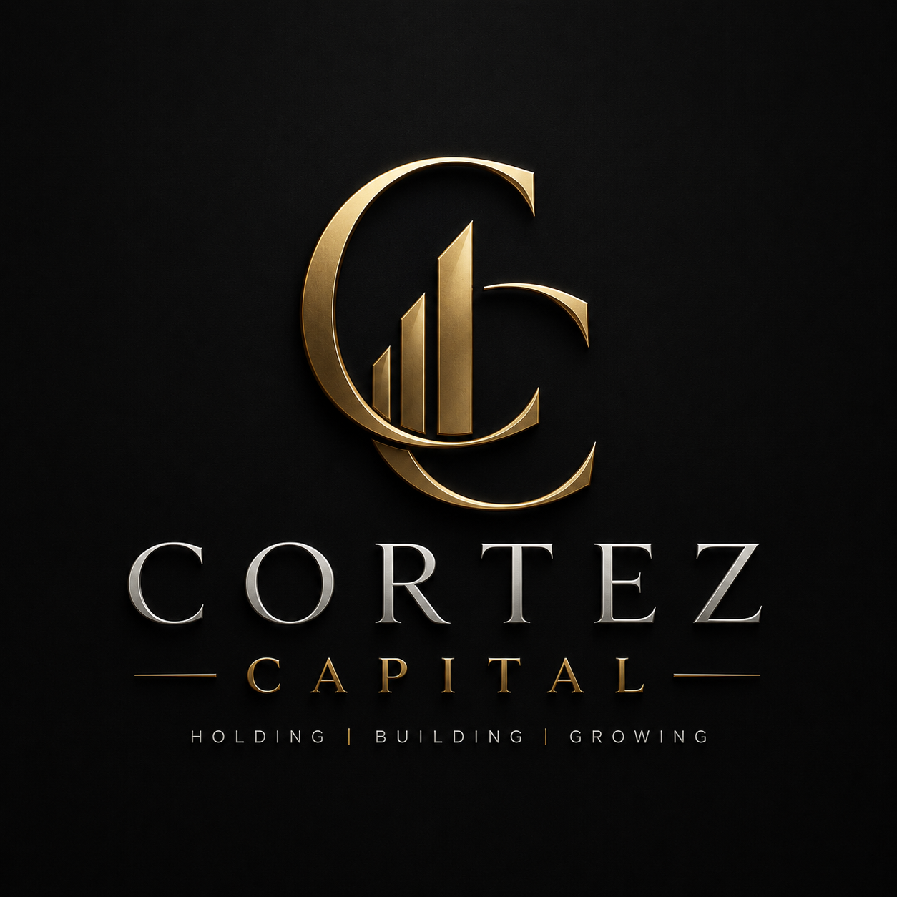

Private Investment
We evaluate opportunities with patience, discretion, and respect for the people who built the business before us.

Private investment holding company
Cortez Capital acquires, supports, and grows operating businesses with disciplined capital, steady leadership, and Kentucky-rooted conviction.
Cortez Capital is a Mt. Sterling, Kentucky holding company focused on private investment and the thoughtful stewardship of operating businesses. We look for durable companies, practical leaders, and opportunities where patient ownership can help good work become stronger over time.
Our posture is deliberately quiet: protect what works, improve what matters, and build value through disciplined growth rather than short-term pressure.
We favor clarity over complexity, relationships over transactions, and operating judgment over financial engineering.
We evaluate opportunities with patience, discretion, and respect for the people who built the business before us.
Our interest is in companies with real customers, practical services, and room for steady, responsible improvement.
We focus on durable cash flow, leadership continuity, and investments that strengthen the business without losing its character.
Cortez Capital is interested in founder-led, family-owned, and closely held businesses where continuity matters. We are especially drawn to essential services, local and regional operators, and companies with clear paths to stronger systems, teams, and customer reach.

Cortez Capital is led with an owner-operator mindset: direct communication, sober underwriting, and a preference for decisions that hold up over years, not quarters.
From Mt. Sterling, Kentucky, the firm’s work is grounded in trust, discretion, and the belief that local businesses can be exceptional platforms for lasting value.
This contact layout demonstrates a clear next step for a business website. This fictional concept does not accept inquiries, investments, or introductions.